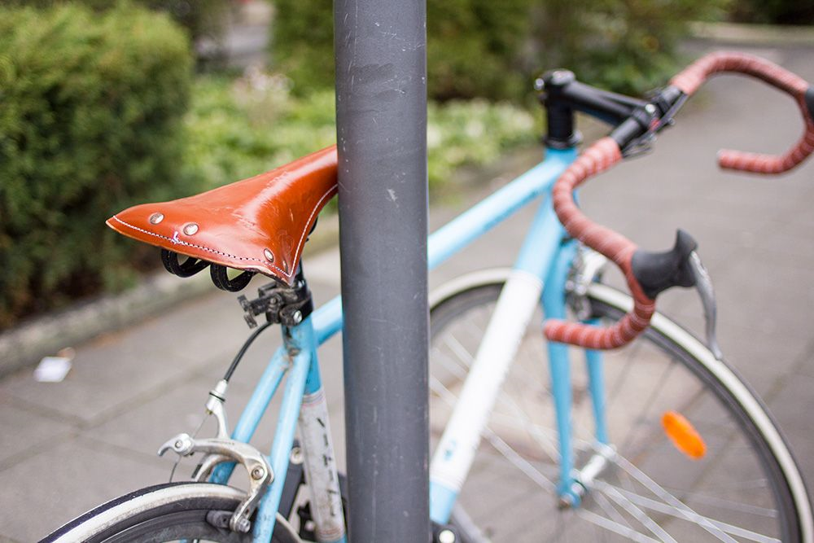
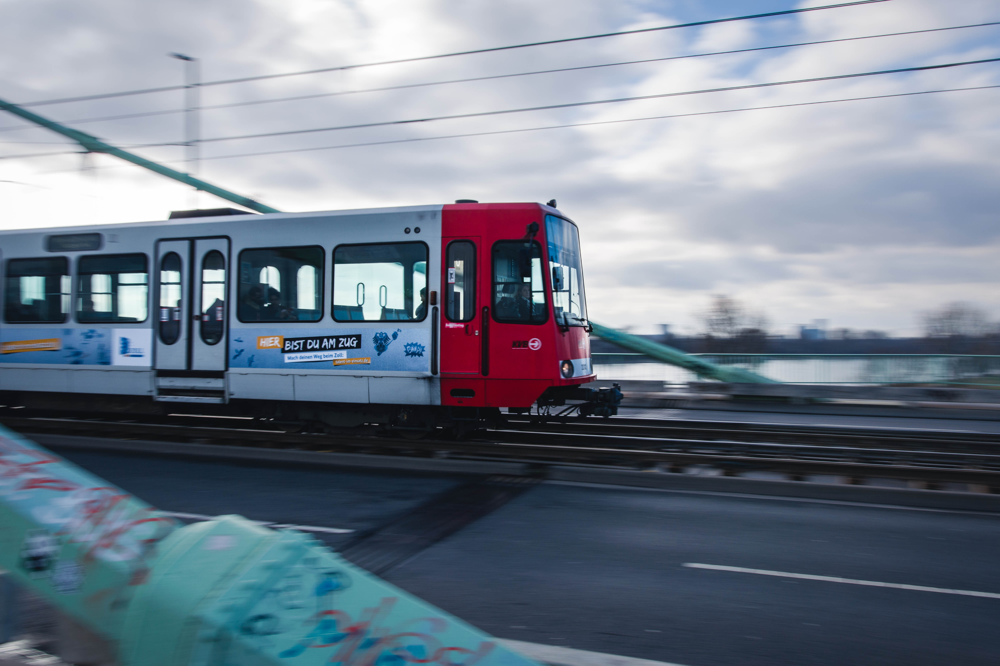

Roads

Road building had been a major issue in the 1920s under the leadership of mayor Konrad Adenauer. The first German limited-access road was constructed after 1929 between Cologne and Bonn. Today, this is the Bundesautobahn 555. In 1965, Cologne became the first German city to be fully encircled by a motorway ring road. Roughly at the same time, a city centre bypass (Stadtautobahn) was planned, but only partially put into effect, due to opposition by environmental groups. The completed section became Bundesstraße ("Federal Road") B 55a, which begins at the Zoobrücke ("Zoo Bridge") and meets with A 4 and A 3 at the interchange Cologne East. Nevertheless, it is referred to as Stadtautobahn by most locals. In contrast to this, the Nord-Süd-Fahrt ("North-South-Drive") was actually completed, a new four/six-lane city centre through-route, which had already been anticipated by planners such as Fritz Schumacher in the 1920s. The last section south of Ebertplatz was completed in 1972. In 2005, the first stretch of an eight-lane motorway in North Rhine-Westphalia was opened to traffic on Bundesautobahn 3, part of the eastern section of the Cologne Beltway between the interchanges Cologne East and Heumar.
Cycling
Compared to other German cities, Cologne has a traffic layout that is not very bicycle-friendly. It has repeatedly ranked among the worst in an independent evaluation[77] conducted by the Allgemeiner Deutscher Fahrrad-Club. In 2014 it ranked 36th out of 39 German cities with a population greater than 200,000. Cycling is particularly popular when the weather is fine. Apart from Roman and medieval monuments, parks, Stadtwald forest and Grüngürtel green belt, beer gardens and other watering holes, you can discover numerous appealing sights off the beaten tracks on two wheels. Compared to other German cities, Cologne has a traffic layout that is not very bicycle-friendly. It has repeatedly ranked among the worst in an independent evaluation[77] conducted by the Allgemeiner Deutscher Fahrrad-Club.
Rail Transport
Cologne has a railway service with Deutsche Bahn InterCity and ICE-trains stopping at Köln Hauptbahnhof (Cologne Main Station), Köln Messe/Deutz and Cologne/Bonn Airport. ICE and TGV Thalys high-speed trains link Cologne with Amsterdam, Brussels (in 1h47, 9 departures/day) and Paris (in 3h14, 6 departures/day). There are frequent ICE trains to other German cities, including Frankfurt am Main and Berlin. ICE Trains to London via the Channel Tunnel were planned for 2013.[78] The Cologne Stadtbahn operated by Kölner Verkehrsbetriebe (KVB)[79] is an extensive light rail system that is partially underground and serves Cologne and a number of neighbouring cities. It evolved from the tram system. Nearby Bonn is linked by both the Stadtbahn and main line railway trains, and occasional recreational boats on the Rhine. Düsseldorf is also linked by S-Bahn trains, which are operated by Deutsche Bahn. The Rhine-Ruhr S-Bahn has 5 lines which cross Cologne.The S13/S19 runs 24/7 between Cologne Hbf and Cologne/Bonn airport. There are also frequent buses covering most of the city and surrounding suburbs, and Eurolines coaches to London via Brussels.